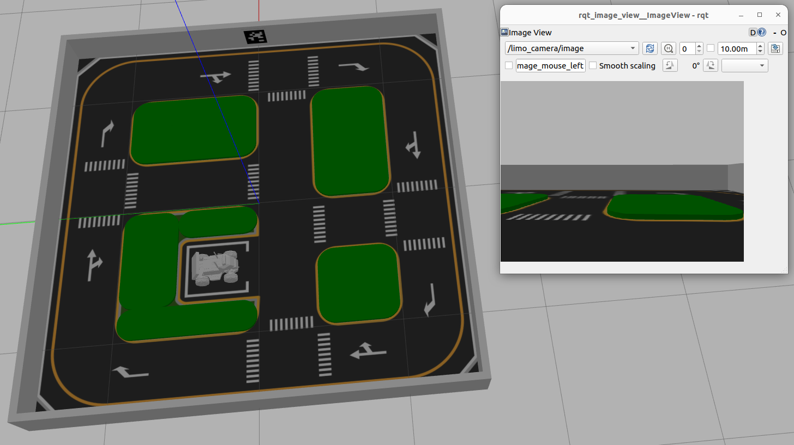
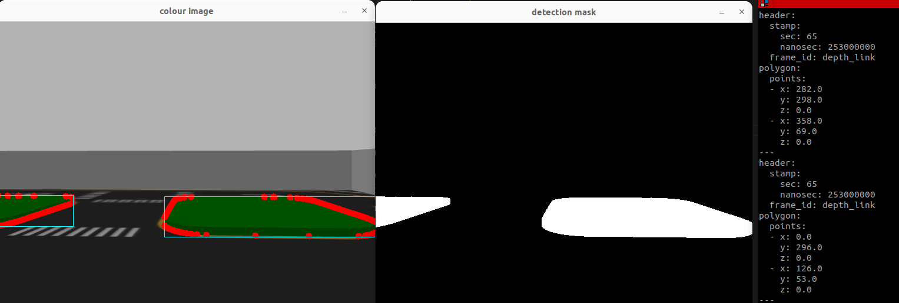
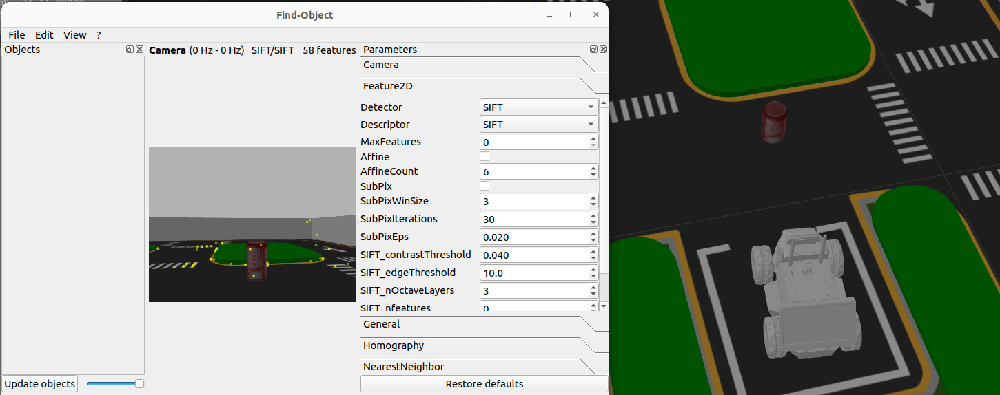
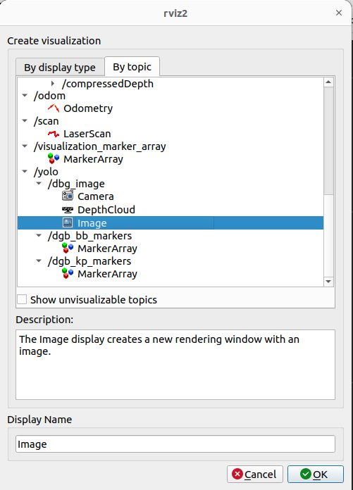
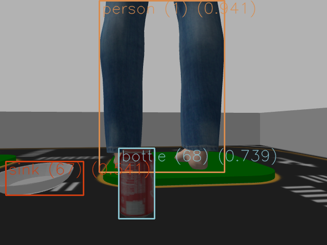
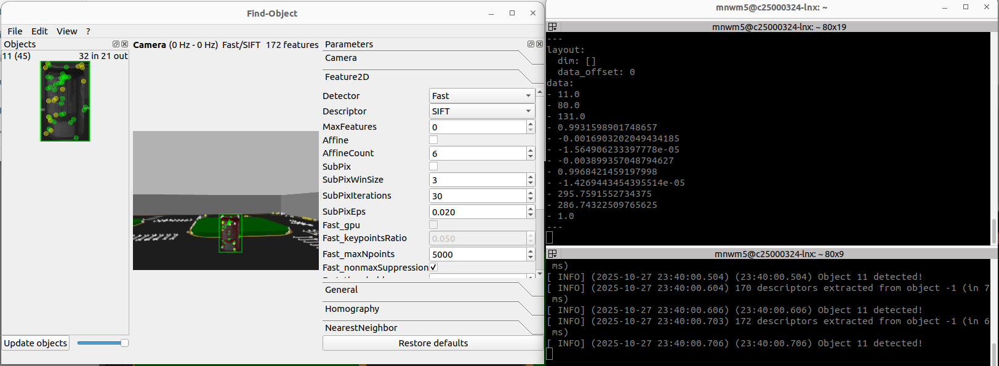

Every sensor we've used so far — LiDAR, IMU, wheel odometry — reports numbers that are already fairly close to what you want: a distance, an angular velocity, a pose. A camera is different. It reports a grid of a few hundred thousand raw brightness values per frame, and none of them mean "pothole" or "cone" or "person" on their own. Perception is the process of turning that grid of numbers into something a robot can act on: a label, a pixel location, and eventually a position in the world it can navigate towards, avoid, or log.
This lecture builds that pipeline end to end, in increasing sophistication. We start with the plumbing (getting a ROS image into OpenCV at all), move through classical computer vision (colour thresholds and contours — no training required), through feature-matching (one reference photo, no training required either, but touchier), and finish with a real deep-learning detector (YOLO) that generalises far better at the cost of needing a trained model. Every stage answers the same three questions in the end: what is it, where is it in the image, and where is it in the world.
Notice, too, that all of this builds directly on Lecture 7. The depth camera and its CameraInfo topic — which you calibrated your understanding of while doing obstacle avoidance with the LiDAR and IMU — are exactly what §8.7's localisation step depends on. Perception isn't a new sensor stack bolted onto the robot; it's a new way of reading the same camera and depth sensor you already have, using image content rather than just raw geometry.
Stages A–D are "computer vision" in the everyday sense — turning an image into a 2D detection. Stages E–I are what makes it robotics: fusing that 2D detection with depth and the robot's own pose (from Lecture 5's tf2 tree) to place it correctly in a shared, persistent world frame. Skip the second half and you have a fun camera demo. Do the second half properly and you have a survey robot.
Keep this diagram in mind for the rest of the session — sections 8.2 through 8.6 are all different ways of producing box D (the 2D detection); section 8.7 is entirely about boxes E through I, and it's the one this whole lecture has been building towards.
It's worth being explicit about why we teach three different detection methods rather than jumping straight to the most powerful one. Each sits at a different point on the same trade-off: how much setup effort it needs versus how well it generalises to conditions it hasn't seen before.
| Stage | Method | Setup cost | Generalises well? |
|---|---|---|---|
| §8.3 | HSV threshold + contours | Minutes — just tune 6 numbers | No — one colour, one lighting condition |
| §8.5 | Find-Object-2D (ORB features) | Minutes — one reference photo | Somewhat — sensitive to angle/scale |
| §8.6 | YOLO (deep learning) | Hours — install + model download/training | Yes — trained on huge, varied datasets |
None of the three is strictly "better" in isolation — a colour threshold that takes five minutes to tune is often the right engineering choice for a well-controlled task (find the bright orange traffic cone), while YOLO is the right choice when the object class varies in appearance and you can't hand-pick a distinguishing colour or shape. Knowing when each is appropriate is as much a part of this lecture as knowing how to run each one.
LIMO's camera driver publishes frames as sensor_msgs/msg/Image — a ROS message containing raw byte data, a width, a height, and an encoding string (usually bgr8, meaning 8-bit Blue-Green-Red channels). OpenCV, on the other hand, expects a plain NumPy array. cv_bridge is the small, purpose-built package that converts between the two, in both directions.
cv_bridge exposes two methods you'll use constantly: imgmsg_to_cv2(msg, desired_encoding='bgr8') turns a ROS Image into an OpenCV/NumPy array, and cv2_to_imgmsg(cv_image, encoding='bgr8') does the reverse — handy if you want to publish an annotated debug image back onto a topic.
That reverse direction is worth using from the start rather than only relying on local cv2.imshow windows: a published debug image can be viewed remotely with rqt_image_view (§8.4), recorded to a bag file for later review, or shown live in RViz2 alongside everything else — none of which work with a local OpenCV GUI window running on the robot itself.
# publishing an annotated debug image instead of (or as well as) cv2.imshow
self.debug_pub = self.create_publisher(Image, '/opencv_bridge/debug_image', 10)
...
annotated = cv_image.copy()
cv2.putText(annotated, "canny edges", (10, 30),
cv2.FONT_HERSHEY_SIMPLEX, 1.0, (0, 255, 0), 2)
self.debug_pub.publish(self.br.cv2_to_imgmsg(annotated, encoding='bgr8'))Here is the minimal working node — a direct simplification of this course's own opencv_bridge.py lab file. It subscribes to the camera topic, converts every incoming frame, and runs three classic OpenCV operations on it: greyscale conversion, blurring, and Canny edge detection.
#!/usr/bin/env python
import rclpy
from rclpy.node import Node
from sensor_msgs.msg import Image
from cv_bridge import CvBridge
import cv2
class OpencvBridge(Node):
def __init__(self):
super().__init__('opencv_bridge')
self.create_subscription(Image, '/limo_camera/image', self.camera_callback, 10)
self.br = CvBridge()
def camera_callback(self, data):
# Convert the ROS Image message into an OpenCV BGR image
cv_image = self.br.imgmsg_to_cv2(data, desired_encoding='bgr8')
gray_img = cv2.cvtColor(cv_image, cv2.COLOR_BGR2GRAY)
blur_img = cv2.blur(gray_img, (3, 3))
canny_img = cv2.Canny(gray_img, 10, 200)
cv2.imshow("Image window", cv_image)
cv2.imshow("blur", blur_img)
cv2.imshow("canny", canny_img)
cv2.waitKey(1) # required — lets OpenCV's GUI event loop run
def main(args=None):
rclpy.init(args=args)
node = OpencvBridge()
rclpy.spin(node)
node.destroy_node()
rclpy.shutdown()
if __name__ == '__main__':
main()Every cv2.imshow() call needs a following cv2.waitKey(n) somewhere in the loop, or the OpenCV window will never actually repaint — it just sits there grey or frozen. waitKey(1) means "wait at most 1 ms for a keypress, then continue" — long enough for OpenCV's internal window manager to process its redraw queue, short enough not to visibly slow your callback down.
Once you can reliably get a NumPy array out of a ROS topic, every OpenCV tutorial you've ever seen becomes usable inside a ROS node — the bridge is the only ROS-specific part.
cv2.imshow opens a real OS-level GUI window, which is a slightly unusual thing to do from inside a ROS callback. It works fine with the default single-threaded executor used by rclpy.spin(), because the callback (and therefore the window's redraw) always runs on the same thread. If you later move to a multi-threaded executor for performance reasons, GUI calls like imshow can become unreliable — plan to strip debug windows out (or move them to a dedicated visualisation node) before that point, rather than debugging flaky window behaviour under load.
| Encoding string | Meaning | Typical source |
|---|---|---|
bgr8 | 8-bit Blue-Green-Red, 3 channels | Standard colour camera |
rgb8 | 8-bit Red-Green-Blue, 3 channels | Some camera drivers / RViz displays |
mono8 | 8-bit single greyscale channel | Greyscale-only cameras |
32FC1 | 32-bit float, 1 channel, metres | Depth image (used in §8.7) |
LIMO's camera can publish frames at a resolution far higher than any debug window needs to be. Rendering full-resolution cv2.imshow windows on every callback is one of the easiest ways to silently overload a callback thread and start dropping frames elsewhere in your node. A quick cv2.resize(cv_image, (0,0), fx=0.5, fy=0.5) before display keeps the debug view responsive without touching the resolution you actually process detections at.
Extend the node above: add a fourth OpenCV window that applies cv2.GaussianBlur followed by cv2.Canny with different threshold pairs (try (50, 150) and (10, 60) side by side). Note how much noisier the edge map gets as you lower the thresholds, and relate that back to why §8.3 uses a colour mask rather than edges to find objects.
The simplest possible "find an object" pipeline needs no training data and no model file at all: pick a colour, threshold the image for pixels close to that colour, and find the blobs. It is the right starting point for perception because every failure mode is visible and fixable by eye — there's no black box to debug.
The trick is doing the thresholding in the right colour space. Raw camera images arrive in BGR (Blue-Green-Red — note OpenCV's historically odd channel order, opposite to RGB). BGR mixes colour and brightness into all three channels, so a threshold tuned indoors under fluorescent light often fails outdoors in sunlight. HSV (Hue, Saturation, Value) separates "what colour" (Hue) from "how vivid" (Saturation) and "how bright" (Value) — so a Hue-based threshold survives lighting changes far better.
OpenCV represents Hue on a 0–179 scale (not 0–360, to fit in one byte), Saturation and Value each on 0–255. Green, for example, sits around Hue 40–80. A free online colour picker such as redketchup.io's colour picker is the fastest way to read off a rough Hue/Sat/Val range for your target object before you start tuning in code.
Here is the full node, closely following this course's colour_contours_detector.py lab file, tuned here to detect a bright green object:
#!/usr/bin/env python
import rclpy
from rclpy.node import Node
from sensor_msgs.msg import Image
from geometry_msgs.msg import Polygon, PolygonStamped, Point32
from cv_bridge import CvBridge, CvBridgeError
import cv2
import numpy as np
class ColourContoursDetector(Node):
def __init__(self):
super().__init__('colour_contours_detector')
self.object_pub = self.create_publisher(PolygonStamped, '/object_polygon', 10)
self.create_subscription(Image, '/limo_camera/image', self.camera_callback, 10)
self.contour_color = (255, 255, 0) # cyan box, drawn for visualisation
self.contour_width = 1
self.br = CvBridge()
def camera_callback(self, data):
try:
bgr_image = self.br.imgmsg_to_cv2(data, "bgr8")
except CvBridgeError as e:
self.get_logger().error(str(e))
return
# BGR -> HSV: separates colour (Hue) from lighting (Value)
hsv_img = cv2.cvtColor(bgr_image, cv2.COLOR_BGR2HSV)
# threshold for "bright green" -- tune these four numbers for your object
hsv_thresh = cv2.inRange(hsv_img,
np.array((40, 100, 50)),
np.array((80, 255, 255)))
contours, hierarchy = cv2.findContours(
hsv_thresh.copy(), cv2.RETR_TREE, cv2.CHAIN_APPROX_SIMPLE)
detected_objects = []
for contour in contours:
area = cv2.contourArea(contour)
if area > 100.0: # ignore tiny noise blobs
cv2.drawContours(bgr_image, contour, -1, (0, 0, 255), 3)
bbx, bby, bbw, bbh = cv2.boundingRect(contour)
detected_objects.append(Polygon(points=[
Point32(x=float(bbx), y=float(bby)),
Point32(x=float(bbw), y=float(bbh))]))
cv2.rectangle(bgr_image, (bbx, bby), (bbx + bbw, bby + bbh),
self.contour_color, self.contour_width)
for polygon in detected_objects:
self.object_pub.publish(PolygonStamped(polygon=polygon, header=data.header))
cv2.imshow("colour image", bgr_image)
cv2.imshow("detection mask", hsv_thresh)
cv2.waitKey(1)
def main(args=None):
rclpy.init(args=args)
node = ColourContoursDetector()
rclpy.spin(node)
node.destroy_node()
rclpy.shutdown()
if __name__ == '__main__':
main()cv2.findContours will happily return dozens of tiny contours from JPEG compression artefacts, dust on the lens, or a single stray green pixel. The if area > 100.0 check is a crude but effective noise filter — anything smaller than 100 pixels² is assumed to be sensor noise rather than a real object. Raise the threshold if you're getting spurious detections; lower it if your real object is small or far away.
The node publishes each detected blob as a geometry_msgs/PolygonStamped on /object_polygon rather than just printing it — this is a deliberate habit. Any other node in the system (a navigation costmap layer, a logging node, the localisation pipeline in §8.7) can subscribe to that topic without needing to know anything about OpenCV, HSV ranges, or how the detection was produced. Publishing structured ROS messages, not just print() statements, is what makes a detector composable with the rest of the stack.
| Target colour | Approx. Hue range (OpenCV 0–179) | Notes |
|---|---|---|
| Red | 0–10 and 170–179 | Wraps around 0 — needs two ranges combined |
| Orange | 10–25 | Common traffic-cone colour |
| Yellow | 25–35 | |
| Green | 40–80 | Used in the example above |
| Blue | 100–130 |
Run the node above pointed at a plain-coloured object (a green cup, a red ball, a blue folder). Use an online HSV colour picker to read off an approximate Hue for your object, then tune the four hsv_thresh bounds until detection mask shows a clean white blob over the object and black everywhere else.
Before trusting any detector's output, look at the raw feed it's working from. rqt_image_view is a generic, reusable image viewer — you point it at any sensor_msgs/Image topic with a remap, and it just works, without writing a single line of subscriber code.
The -r image:=/limo_camera/image remap is doing the useful work here: rqt_image_view's internal subscriber is hard-coded to a generic topic name (image), and the remap redirects it to whatever real topic you need — the depth image, a debug annotated image published by your own node, or the raw colour feed. This is the same remap pattern from Lecture 4 (renaming topics at launch time) applied to a GUI tool instead of a launch file.


When a detector "isn't working," the first ten seconds of debugging should always be: open rqt_image_view on the raw feed. Is the camera even publishing? Is the lens covered, out of focus, or wildly overexposed? A huge fraction of "my code is broken" perception bugs are actually "the sensor never had a usable image to begin with."
It's also worth confirming which image topics actually exist before remapping to one — a typo in a topic name is a silent failure (the tool just sits there with a blank window and no error), not a crash.
ros2 topic hz is the second half of the habit: a topic that lists but publishes at 0 Hz (or drops well below the expected frame rate) points to a driver, USB bandwidth, or CPU-load problem upstream of anything you're about to debug in your own detection code.
Colour thresholding only works if your target object has a distinctive, unique colour. Most real objects don't (cardboard boxes, tools, road defects, most packaging). Feature-based detection takes a different approach: it finds distinctive local keypoints in an image — corners, blobs, sharp intensity changes — describes each one numerically (a descriptor), and matches those descriptors between a trained reference photo and the live camera feed.
ORB, FAST, SIFT, and BRISK are classical algorithms for finding and describing keypoints. They need zero training beyond a single reference photo of the object you want to find — no dataset, no GPU, no epochs. The trade-off: they're sensitive to scale changes, viewpoint changes, and lighting changes, because they're matching literal local pixel patterns rather than a learned, generalised concept of "what a mug looks like."
Find-Object-2D packages this whole workflow (keypoint extraction, descriptor matching, and a live GUI for adding reference objects) into a ready-to-run ROS 2 node.
Once running, right-click in the "objects" panel and add a reference image (you can crop one directly from the live feed). From then on, every incoming frame is scanned for matching keypoint clusters against every registered reference object, and matches are drawn live and published on a ROS topic. A good reference photo:

| Approach | Training needed | Robust to viewpoint/scale change | Compute cost |
|---|---|---|---|
| HSV threshold (§8.3) | None | Poor | Very low |
| Find-Object-2D (ORB/SIFT) | 1 reference photo | Moderate | Low |
| YOLO (§8.6) | Pretrained / fine-tuned model | Good | Moderate–high |
Feature detectors need texture to find keypoints. A plain matte-coloured box or a smooth wall gives ORB almost nothing to latch onto, and matches will be sparse and unreliable. Objects with printed labels, patterns, or sharp edges work far better as Find-Object-2D reference images than plain-coloured ones.
Register two reference objects in Find-Object-2D: one with a lot of surface texture (a book cover, a snack packet) and one with almost none (a plain mug, a smooth block). Move the camera to vary distance and viewing angle for each, and note the angle/distance at which matching starts to fail for each object. Write down roughly how much more forgiving the textured object is.
Both previous approaches share a limitation: they only recognise the exact colour or the exact reference photo you gave them. YOLO ("You Only Look Once") is a deep convolutional neural network trained on hundreds of thousands of labelled images, and it generalises — it can recognise "a person" or "a chair" across wildly different lighting, angles, and backgrounds it has never literally seen before, because it learned the underlying visual concept rather than matching pixels.
Inference is running a trained model forward on new input to get a prediction (as opposed to training, which is the process of learning the model's weights in the first place). Every YOLO detection you see at runtime is one inference pass over one camera frame — no learning happens on the robot; the model was already trained beforehand.
This course uses yolo_ros, a ROS 2 wrapper around Ultralytics YOLO models. Before installing, it's worth knowing what the package actually gives you:
/yolo/detections) carrying class labels, confidence scores, and pixel bounding boxes.Setup and launch:
Detections publish as a yolo_msgs/DetectionArray on /yolo/detections — each entry carries a class label, a confidence score, and a 2D bounding box in pixel coordinates. Add the provided detection-visualisation markers in RViz2 and you'll see labelled boxes overlaid live on the camera feed, exactly the same view you've been building intuition for since Lecture 6.


yolo_bringup exposes a launch argument to select the inference device. On LIMO's onboard computer (CPU-only, typically) inference will run noticeably slower per frame than on a development laptop with a CUDA-capable GPU — for live demos, consider a smaller model variant (e.g. YOLOv8n "nano" instead of the larger "m"/"l" variants) to keep frame rate usable, trading some accuracy for speed.
| Model variant | Relative size | Typical use here |
|---|---|---|
| YOLOv8n (nano) | Smallest, fastest | Live demo on LIMO's onboard CPU |
| YOLOv8s / YOLOv8m | Medium | Development laptop, balance of speed/accuracy |
| YOLOv8l / YOLOv8x | Largest, slowest | Offline/GPU evaluation, best accuracy |
The launch file also accepts arguments for the confidence threshold and the specific class list to detect — restricting detection to only the classes relevant to your task (rather than the full 80-class COCO set) both speeds up post-processing and reduces false positives from irrelevant background objects.
The default YOLO weights are trained on COCO, a general-purpose dataset of everyday objects (people, cars, chairs, bottles) — they won't recognise something task-specific like a particular road-defect type out of the box. The usual path for a custom class is: collect and label a few hundred example images (tools such as Roboflow make this fast), fine-tune a YOLO checkpoint on that labelled set, then point yolo_bringup's model-path argument at your fine-tuned weights instead of the stock ones. This is exactly the step the Lecture 14 capstone's pothole-detection model goes through before it's usable on LIMO.

Each entry in the array is one detection for the current frame: a class label, a confidence score between 0 and 1, and a bounding box given as a pixel centre and size — exactly the image_coords input the localisation pipeline in §8.7 needs next.
Launch yolo_bringup against LIMO's camera feed and echo /yolo/detections with ros2 topic echo. Walk a common object (a bottle, a chair, a person) through the frame at different distances and note at what distance the confidence score drops below roughly 0.5. Compare that to how the same object performed under the HSV thresholding node from §8.3.
Every method in this lecture so far ends in the same place: a pixel location in an image (a bounding-box centre, or a contour centroid) plus a label. That is still only a 2D fact about a 2D image — useful for a demo overlay, useless for navigation or a survey log. Turning it into a usable 3D fact needs four more steps, closely following this course's object_localisation.py and object_counter.py lab files.
| Step | Input | Output | Tool |
|---|---|---|---|
| 1. Depth lookup | Pixel coords in colour image | Depth value (metres) | 32FC1 depth image |
| 2. 3D projection | Pixel coords + depth | 3D point, camera frame | image_geometry.PinholeCameraModel |
| 3. Frame transform | 3D point, camera frame | 3D point, map/odom frame | tf2 lookup_transform + do_transform_pose |
| 4. De-duplication | New world point + history | Unique object count/list | Proximity distance check |
LIMO's depth camera publishes a 32FC1 image where every pixel value is a distance in metres rather than a colour. Once you have a detection's pixel coordinates in the colour image, you look up the corresponding depth reading at (roughly) the same pixel in the depth image — "roughly" because the colour and depth sensors sit at slightly different positions and have different fields of view, so a small aspect-ratio correction is applied first.
Using the camera's intrinsics (focal length and principal point, delivered on the CameraInfo topic and wrapped by image_geometry.PinholeCameraModel), the pixel coordinates are projected into a 3D ray from the camera, then scaled by the depth reading to land on an actual 3D point — in the camera's own local frame.
That point is still expressed relative to the camera, which is only useful if the robot never moves. Using the exact tf2 lookup pattern from Lecture 5 — tf_buffer.lookup_transform(target_frame, source_frame, time) followed by do_transform_pose — the point is re-expressed in a fixed frame (odom or map), giving a world position that stays meaningful as LIMO keeps driving.
The source_frame argument to lookup_transform must be the frame the point is actually expressed in — for LIMO's depth camera this is typically depth_link, not base_link or camera_link. Mixing these up doesn't usually throw an error; it silently applies the wrong offset, so your detected object appears a small but consistent distance away from its true position — a frustrating bug because it "mostly works." Run ros2 run tf2_tools view_frames (from Lecture 5) if you're unsure of the exact frame name your depth image is published in.
Why not skip depth entirely and estimate distance from how large the bounding box appears? It's tempting, and works passably for a known, fixed-size object (a bounding box for a standard traffic cone shrinks predictably with distance). But it breaks down for anything with variable real-world size or an unusual viewing angle, and it needs a calibration step per object class. The depth-camera approach in Steps 1–2 needs no per-object calibration at all — it measures distance directly, regardless of what the object is.
# condensed from object_localisation.py -- inside the image callback, after
# finding a contour/bbox centroid `image_coords` and camera intrinsics model:
depth_value = image_depth[int(depth_coords[0]), int(depth_coords[1])]
camera_ray = np.array(ccamera_model.projectPixelTo3dRay(
(image_coords[1], image_coords[0])))
camera_ray /= camera_ray[2] # normalise so z = 1
camera_point = camera_ray * depth_value # scale by measured depth
camera_pose = Pose(position=Point(x=camera_point[0], y=camera_point[1],
z=camera_point[2]),
orientation=Quaternion(w=1.0))
transform = tf_buffer.lookup_transform('map', 'depth_link', rclpy.time.Time())
global_pose = do_transform_pose(camera_pose, transform)
# global_pose.position is now a real map-frame (x, y, z) for this detectionDepth cameras routinely report 0.0 or NaN at pixels that are too close, too far, on a reflective/transparent surface, or simply outside the sensor's valid range. Multiplying a projected ray by a bogus depth value silently produces a nonsense world position (often sitting exactly at the camera origin). Always guard: check depth_value > 0 and not math.isnan(depth_value) before trusting a localisation result, and simply skip that detection on this frame if the check fails — there will usually be a good reading on the next frame.
You could publish detections in depth_link and skip the tf2 transform — but then every downstream consumer (a map, a log, a navigation goal) would need to know the robot's exact pose at the exact instant of each detection to make sense of the numbers. Transforming into map once, at the source, means every other node in the system can treat a detection's position as a plain, static fact — the same discipline Lecture 5 introduced for costmaps and Lecture 6 relied on for navigation goals.
A robot driving slowly past a stationary object will detect it dozens of times across consecutive frames — each one independently localised to (nearly) the same world position. Left alone, this means your "object count" is really a "frame count," badly overcounting. object_counter.py fixes this with a simple proximity check: keep a running list of already-logged world positions, and before adding a new detection, check whether it falls within a small distance threshold (e.g. 0.2 m) of one already in the list.
# condensed from object_counter.py
detection_threshold = 0.2 # metres
def counter_callback(self, data):
new_object = data.pose
for existing in self.detected_objects:
d = math.sqrt((existing.position.x - new_object.position.x) ** 2 +
(existing.position.y - new_object.position.y) ** 2 +
(existing.position.z - new_object.position.z) ** 2)
if d < self.detection_threshold:
return # same physical object, already logged -- don't double count
self.detected_objects.append(new_object) # genuinely new object
self.get_logger().info(f'total unique objects: {len(self.detected_objects)}')Detect → localise → de-duplicate is exactly the pipeline the Lecture 14 capstone mission is built on: a road-defect / pothole survey task where LIMO drives a route, detects defects with a vision model, projects each one into map-frame coordinates, and reports a de-duplicated count and location list — not "we saw a pothole 40 times," but "there are 6 distinct potholes, here is where each one is." Everything you build in this section is capstone infrastructure, not a side exercise.
Combine §8.3's colour-threshold detector with the localisation pattern above: publish the contour centroid as a pixel coordinate, look up depth at that pixel, project to a PoseStamped in map frame, and log it through a de-duplication check with a 0.2 m threshold. Drive LIMO slowly past a single coloured object twice from different angles and confirm your counter still reports exactly one detected object, not two.
You now have four different ways to answer "what is in this image, and where" — colour thresholding for the simplest possible zero-training case, feature matching for textured objects with one reference photo, and YOLO for open-set, robust, trained recognition — plus the depth-lookup, tf2-transform, and de-duplication pipeline that turns any one of them into a durable, world-frame fact the rest of the robot's stack can use.
The methods in this lecture are not mutually exclusive in a real system, either. It's common to run a fast, cheap detector (HSV thresholding, or a lightweight YOLO-nano pass) continuously for reactive behaviour, while a slower but more accurate detector runs less often, or only when the fast detector flags something worth a closer look — a layered approach that trades a little latency for a lot of saved compute, which matters a great deal on an embedded onboard computer like LIMO's.
sensor_msgs/Image to an OpenCV array with cv_bridge, and run basic OpenCV operations on it inside a ROS 2 node.cv2_to_imgmsg, rather than relying only on local imshow windows.ros2 topic hz to sanity-check a camera feed before debugging further./yolo/detections, and view them live in RViz2.This lecture sits directly between Lecture 7 (sensors, including the depth camera you now rely on for localisation) and the hardware/testing focus of Lecture 9. Perception is also the last major building block before navigation (Lecture 10+) — LIMO can now not only sense obstacles geometrically via LiDAR, but recognise and locate specific labelled objects in the world, which is exactly what the Lecture 14 road-defect survey capstone depends on. Nothing here is a detour; it's the sensing layer the capstone mission is built on.
sensor_msgs/Image messages and OpenCV/NumPy arrays, via imgmsg_to_cv2() and cv2_to_imgmsg().cv2.findContours; its area and bounding box give a simple object detection.| Symptom | Likely cause | Where to look |
|---|---|---|
| OpenCV window is grey/frozen | Missing cv2.waitKey(1) | §8.2 |
| Colours look swapped (sky is orange) | BGR/RGB channel mix-up | §8.3, Common Mistakes |
| Detection mask is all black or all white | HSV bounds don't match current lighting | §8.3 |
| rqt_image_view shows nothing | Wrong topic name in the remap, or camera not publishing | §8.4 |
| Find-Object-2D never matches | Reference image too flat/textureless, or wrong scale | §8.5 |
| YOLO detections look right but confidence is low | Object class not well represented in training data, or object too far/occluded | §8.6 |
| Localised object appears offset from its real position | Wrong tf2 source frame, or unguarded NaN depth | §8.7 |
| Object count keeps climbing while robot is stationary | Missing or too-tight de-duplication threshold | §8.7 |